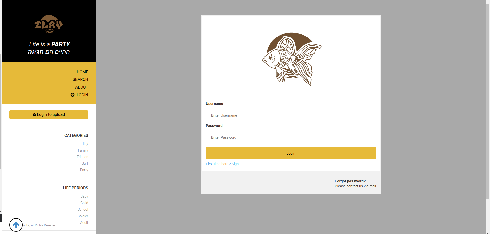

Project Overview
The memorial website serves as a collaborative space for those who were touched by Illay’s life. Users can upload posts with captions, sharing stories from their unique experiences with Illay. This collective storytelling allows for a deeper connection among friends and family as they celebrate his legacy together.
The platform is designed to be user-friendly, ensuring that everyone, regardless of their technical skills, can contribute and engage with the content. The project was built with care and attention to create a respectful and enduring tribute to Illay.

Tools Used
HTML
CSS
JavaScript
Flask
Python
SQL
GIT